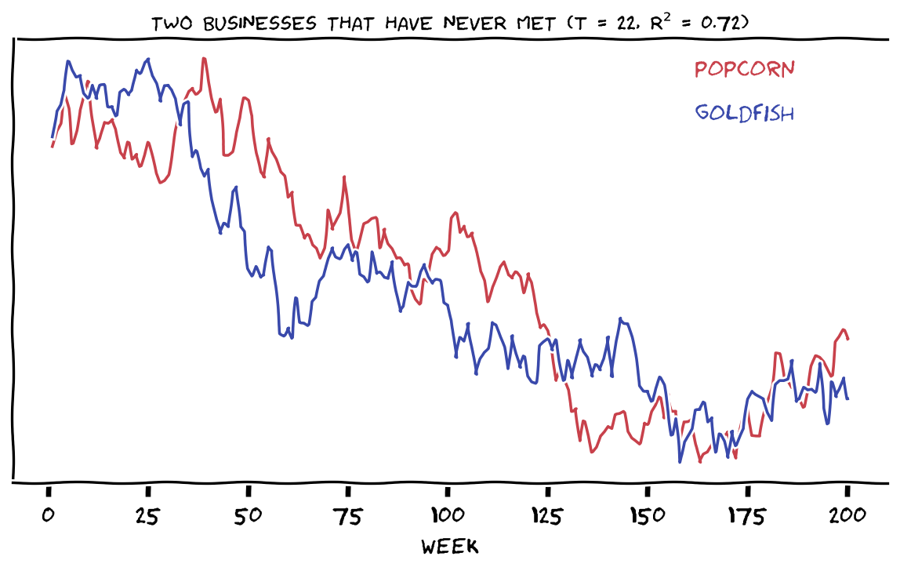
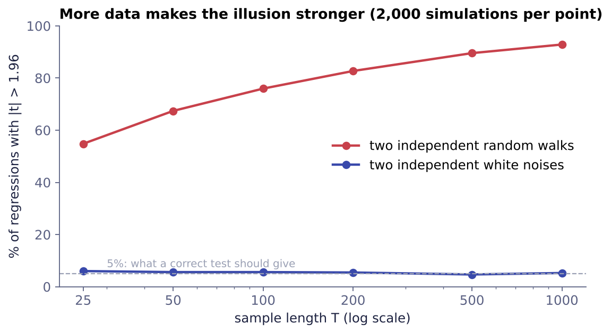

When Two Random Walks Fall in Love: Spurious Regression
A cinema owner keeps a weekly index of popcorn sales. Across town, a pet shop keeps a weekly index of goldfish sold. The two businesses have never heard of each other. No customer links them. No supplier links them. Run a regression of one on the other, and you get a t-statistic of 22.
This is the story of nonsense correlations: how a British statistician spotted them a century ago, how two econometricians proved they were everywhere, and how one of them won a Nobel Prize while trying to win an argument.
Part II · Foundations · Chapter 2 of 9
1. Omitted variables · 2. Spurious regression · 3. R-squared · 4. Measurement error · 5. Heteroskedasticity · 6. Autocorrelation · 7. Dummy variables · 8. Structural breaks · 9. Multicollinearity
Data: blog_datasets.xlsx, sheet P2_spurious · Simulated weekly data, 200 observations · EViews program
Download this chapter's data: P2_spurious.xlsx
1926: marriages in church and the death rate
In 1926, George Udny Yule gave his presidential address to the Royal Statistical Society. Its title was a question: "Why do we sometimes get nonsense-correlations between time-series?"
His example is still delightful. For England from 1866 to 1911, he plotted two series: the proportion of marriages held in the Church of England, and the death rate. Both fell steadily over those 46 years. The correlation was +0.95. Taken literally, it suggests a cure for mortality: shut the registry offices and make everyone marry in church.
Nobody believed that, of course. Yule's point was that two series that both drift over time will often look strongly related, for no reason at all. In 1980, David Hendry made the same point even more mischievously: he showed that cumulative rainfall in the UK "explained" British inflation better than the money supply did. Today the website Spurious Correlations by Tyler Vigen keeps the tradition alive with gems like cheese consumption and deaths by bedsheet tangling.
Our two lovebirds

ls popcorn c goldfish
Dependent Variable: POPCORN
Method: Least Squares
Date: 10/27/26 Time: 21:45
Sample: 1 200
Included observations: 200
==============================================================================
Variable Coefficient Std. Error t-Statistic Prob.
==============================================================================
C 32.89259 2.542950 12.93481 0.0000
GOLDFISH 1.349260 0.060292 22.37861 0.0000
==============================================================================
R-squared 0.716658 Mean dependent var 89.17085
Adjusted R-squared 0.715227 S.D. dependent var 9.995533
S.E. of regression 5.334028 Akaike info criterion 6.196040
Sum squared resid 5633.468 Schwarz criterion 6.229023
Log likelihood -617.6040 Hannan-Quinn criter. 6.209388
F-statistic 500.8024 Durbin-Watson stat 0.137310
Prob(F-statistic) 0.000000
==============================================================================
A t-statistic of 22. An R-squared of 0.72. A consultant could build a whole slide deck on "cross-category demand synergies".
But I built these two series myself, completely independently. Each is a random walk: this week's value is last week's value plus a random shock.
The shocks \(e\) and \(v\) have nothing to do with each other. The true slope is exactly zero.
Why does this happen?
A random walk has no home. Over 200 weeks it drifts up for a while, then down, then sideways, purely by chance. Two such wanderers will often drift in the same direction for long stretches, and OLS reads those shared drifts as a relationship. (The unit-root chapters in Part III, starting with The Kite and the Balloon, explain random walks in detail.)
Granger and Newbold: it's not rare, it's normal
In 1974 Clive Granger and Paul Newbold published "Spurious regressions in econometrics" in the Journal of Econometrics. They simulated pairs of independent random walks and regressed one on the other. The t-test, which should reject 5% of the time, rejected about three times in four.
I repeated their experiment for different sample lengths:

For two independent white noise series, the t-test behaves: about 5% false alarms at every sample size. For two independent random walks, it is a disaster: 67% false alarms with 50 observations, 76% with 100, and 93% with 1,000. More data does not cure the illusion. It makes it worse.
Why does the t-statistic keep growing? (click to open)
Peter Phillips explained this in 1986 ("Understanding spurious regressions in econometrics"). When both series are random walks, the slope estimate \(\hat\beta\) does not converge to zero. It converges to a random number that depends on the particular paths the two walks took. Meanwhile the residuals are also a random walk, so their variance is huge, but the standard error formula assumes they are well-behaved noise. The result:
In words: the t-statistic grows like the square root of the sample size, even though the true slope is zero. Double the data, and the "significance" grows by about 40%. And \(R^2\) does not go to zero either; it converges to a random number between 0 and 1.
Three ways to catch the lovebirds
Clue 1: the Durbin-Watson statistic
Look at the bottom right of the first table: DW = 0.137. A value near 2 means the residuals behave like fresh noise; near 0 means each residual is almost a copy of the last one. Granger and Newbold's famous rule of thumb: if \(R^2\) is larger than the Durbin-Watson statistic, be suspicious. Here 0.72 is more than five times 0.137.
Clue 2: test each series for a unit root
Open each series and run an ADF test (View → Unit Root Tests, constant):
Null Hypothesis: POPCORN has a unit root
Exogenous: Constant
Lag Length: 0 (Automatic - based on SIC, maxlag=14)
==============================================================================
t-Statistic Prob.*
==============================================================================
Augmented Dickey-Fuller test statistic -1.222165 0.6640
Test critical values: 1% level -3.463645
5% level -2.876176
10% level -2.574572
==============================================================================
*MacKinnon (1996) one-sided p-values.
Null Hypothesis: GOLDFISH has a unit root
Exogenous: Constant
Lag Length: 0 (Automatic - based on SIC, maxlag=14)
==============================================================================
t-Statistic Prob.*
==============================================================================
Augmented Dickey-Fuller test statistic -1.369535 0.5968
Test critical values: 1% level -3.463645
5% level -2.876176
10% level -2.574572
==============================================================================
*MacKinnon (1996) one-sided p-values.
Neither test can reject a unit root (p = 0.66 and p = 0.60). Both series are balloons.
Clue 3: test whether they are cointegrated
Two random walks can be genuinely tied together, if they wander together and the gap between them stays stable. That is cointegration, and it is exactly what Granger discovered next (see below). The Engle-Granger test asks: are the residuals of the levels regression themselves a random walk? (Group POPCORN and GOLDFISH, then View → Cointegration Test → Single-Equation Cointegration Test → Engle-Granger.)
Cointegration Test - Engle-Granger
Date: 10/27/26 Time: 21:45
Equation: EQ2A
Specification: POPCORN C GOLDFISH
Cointegrating equation deterministics: C
Null hypothesis: Series are not cointegrated
Automatic lag specification (lag=0 based on Schwarz Info Criterion,
maxlag=14)
==============================================================================
Value Prob.*
==============================================================================
Engle-Granger tau-statistic -2.631155 0.2253
==============================================================================
*MacKinnon (1996) p-values.
τ = −2.63, p = 0.23. The 5% critical value for two variables is about −3.37, more demanding than an ordinary unit root test because the residuals were fitted to look as stationary as possible. No cointegration. The relationship is spurious.
The cure: look at changes, not levels
If the two series are unrelated, this week's change in goldfish sales should tell us nothing about this week's change in popcorn sales.
ls d(popcorn) c d(goldfish)
Dependent Variable: D(POPCORN)
Method: Least Squares
Date: 10/27/26 Time: 21:45
Sample: 2 200
Included observations: 199
==============================================================================
Variable Coefficient Std. Error t-Statistic Prob.
==============================================================================
C -0.082319 0.100535 -0.818813 0.4139
D(GOLDFISH) -0.006250 0.098452 -0.063480 0.9494
==============================================================================
R-squared 0.000020 Mean dependent var -0.081859
Adjusted R-squared -0.005056 S.D. dependent var 1.410968
S.E. of regression 1.414530 Akaike info criterion 3.541472
Sum squared resid 394.1765 Schwarz criterion 3.574570
Log likelihood -350.3764 Hannan-Quinn criter. 3.554867
F-statistic 0.004030 Durbin-Watson stat 1.888619
Prob(F-statistic) 0.949448
==============================================================================
The romance is over. The slope is essentially zero (p = 0.95), the \(R^2\) is 0.00002, and the Durbin-Watson statistic is back near 2.
Differencing is not always the answer, though. If two series are cointegrated, like income and consumption, differencing throws away their long-run link. Then you need an error correction model, which keeps both the short-run changes and the long-run tie.
The Nobel twist
Here is my favourite part of the story. After Granger and Newbold's paper, David Hendry criticised their work. Granger set out to prove Hendry wrong. In the process, he discovered that two random walks can share a common trend so that a combination of them is stationary: cointegration. Jennifer Castle and David Hendry tell the story in their tribute Clive W.J. Granger and Cointegration: Granger found cointegration while trying to refute a critique by Hendry.
In 2003 Granger shared the Nobel Prize in Economics with Robert Engle, Granger "for methods of analyzing economic time series with common trends". Few people have lost an argument so profitably.
The lesson
A high \(R^2\) and a huge t-statistic between two trending series mean nothing until you have checked for unit roots and cointegration. The Durbin-Watson statistic is your smoke alarm; the unit root and cointegration tests are the fire inspectors.
Something to think about
India's GDP and the number of mobile phone users both rose for decades. Someone regresses one on the other and finds \(R^2\) = 0.97. List the three checks from this post you would ask for, in order. If the two series turned out to be cointegrated, would that prove that phones cause growth? Answer in the comments.